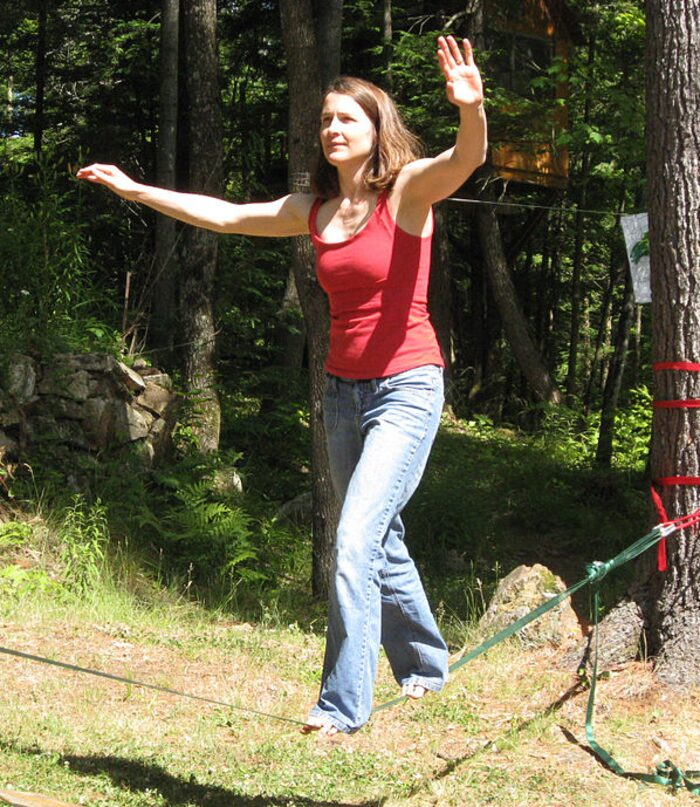
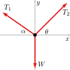
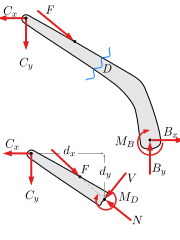

← All weeks · Week 1 module on Canvas
MECH 223-002 · Fall 2026 · Week 1 · Start here
Before class: What statics is (and why it matters)
Arrive ready to talk about forces, Newton’s laws, and free-body diagrams—not to finish homework.
1. Why this reading exists
Lecture 1 covered the course logistics. Lecture 2 starts the technical story: what statics studies, what a force is, and how we decide whether something stays put. This page is a short warm-up so class can move faster on examples.
You do not need to memorize unit conversion tables before class. You do need a clear picture of equilibrium and free-body diagrams.
2. Statics in one sentence
Statics is the part of mechanics that asks: when forces (and moments) act on a body that is not accelerating, what must be true?
If an object is at rest and stays at rest, Newton’s first law applies: the net force is zero (and, for an extended body, the net moment is zero). That pair of statements is the backbone of this course.
- Particle model: we care about force balance only (∑F = 0).
- Rigid-body model: we care about force and moment balance (∑F = 0 and ∑M = 0).
Most of MECH 223 is learning to draw the right diagram, write those equations, and solve them carefully.
3. A picture first, equations second
Engineering problems usually start as a physical situation, not as algebra. Look at the slackline example below: a person stands on a cable. The cable pulls both ways; gravity pulls down. If the person is not accelerating, those forces must cancel as vectors.

The next step is not “pick a formula.” It is to replace the person-and-cable photo with a free-body diagram (FBD): the body of interest alone, with every external force drawn as a labeled arrow.

For a different kind of problem—internal forces in a machine arm—you still start the same way: isolate the piece you care about and show only the forces/moments that the rest of the world exerts on it.

4. Forces are vectors (preview for L2)
A force has magnitude, direction, and a point of application. In statics we almost always:
- resolve forces into components (often x, y, later z),
- sum components separately,
- set each sum to zero for equilibrium.
For the slackline FBD, equilibrium in the plane looks like:
∑Fx = 0 → −T1 cos α + T2 cos θ = 0
∑Fy = 0 → T1 sin α + T2 sin θ − W = 0
You will practice the algebra in class and on homework. For now, notice the pattern: draw → label → write ∑F = 0 (and ∑M = 0 when needed) → solve.
5. Newton’s laws you will hear in L2
- 1st law (equilibrium): if net force (and net moment, for a body) is zero, the body does not accelerate.
- 2nd law: ∑F = ma. Statics is the special case a = 0 (and angular acceleration = 0).
- 3rd law: forces between two bodies come in equal-and-opposite pairs. That is why FBDs must be consistent when you split a system into parts.
Weight is the gravitational force near Earth, W = mg, drawn downward through the center of mass unless the problem states otherwise.
6. Check yourself (90 seconds)
- In your own words, what does ∑F = 0 mean physically?
- What is the difference between a sketch of the structure and a free-body diagram?
- If a bolt pushes on a bracket, what must the bracket do to the bolt?
Bring answers in your head (or a sticky note). We will use them at the start of L2.
7. Before you walk into class
- Skim Beer & Johnston Chapter 1 (intro + units) and the opening of Chapter 2.
- Have the L2 slides available (Canvas → Week 1 module).
- Bring a calculator you can use in degrees and radians (we will stay in degrees unless noted).
Also in Start here (Canvas)
Attribution. Course text on this page is original for MECH 223-002 (UNL). Figures: slackline photo and FBD diagrams from Engineering Statics: Open and Interactive (Baker & Haynes / contributors), used under the book’s open licenses (diagrams CC0; photo per Wikimedia/OER credit on the source page). Live book: engineeringstatics.org.